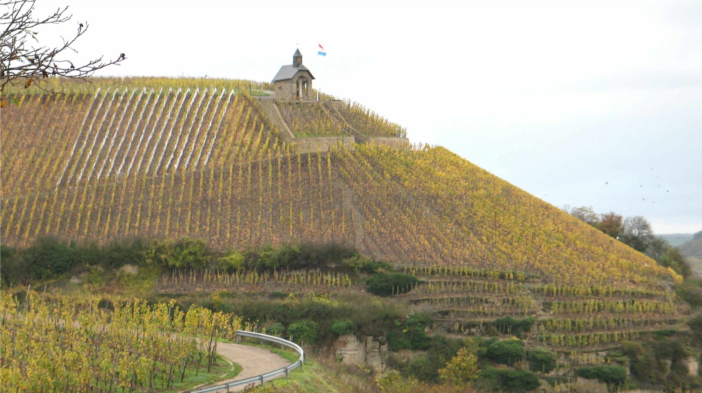
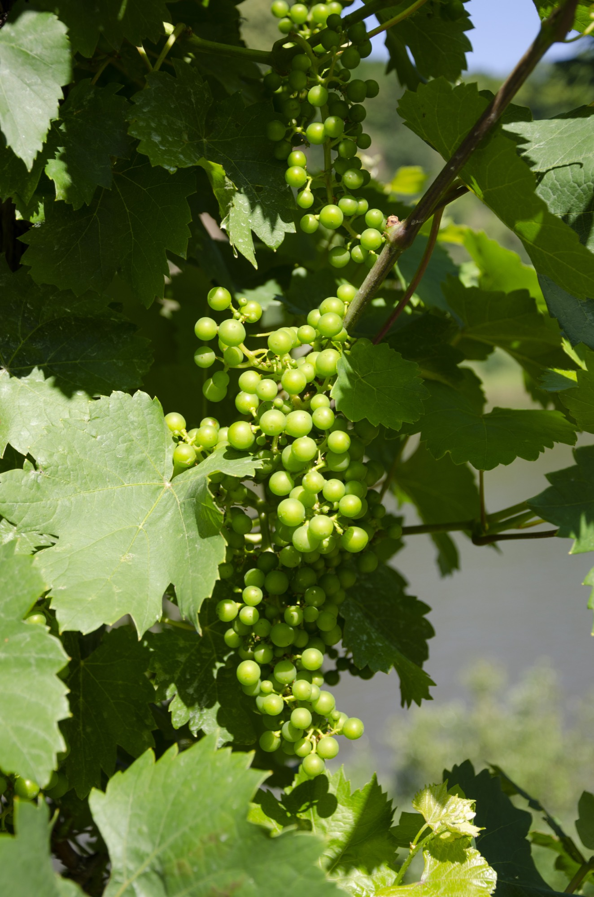

Depuis 1834 · Wormeldange
Une famille, un coteau,
six passages.
Riesling sur calcaire coquillier, élevé à onze mètres sous la vigne, au-dessus de la Moselle.

Depuis 1834 · Wormeldange
Riesling sur calcaire coquillier, élevé à onze mètres sous la vigne, au-dessus de la Moselle.
Le domaine
Le coteau commence derrière l'église et monte pendant cent vingt mètres. En haut, vingt centimètres de terre sur la dalle calcaire, des ceps plantés en 1962, et une pente à soixante-deux pour cent où aucune machine ne passe.
On y monte six fois entre le 25 septembre et la Toussaint, parce que le raisin n'y mûrit jamais tout en même temps.
Le vignoble

La cave
La cave est creusée à onze mètres sous la parcelle du Nussbaum, dans la même roche que celle où pousse la vigne. Les foudres ont trente à soixante ans ; le plus jeune ne donne plus de goût de bois depuis longtemps, et c'est exactement ce qu'on lui demande.
Levures de la parcelle, dix mois sur lies, aucune correction.
Le chaiSur rendez-vous, du mardi au samedi
Une heure et demie dans la cave et dans la pente, six personnes au plus. Prévoyez des chaussures qui tiennent.